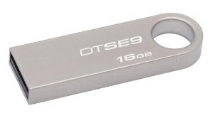
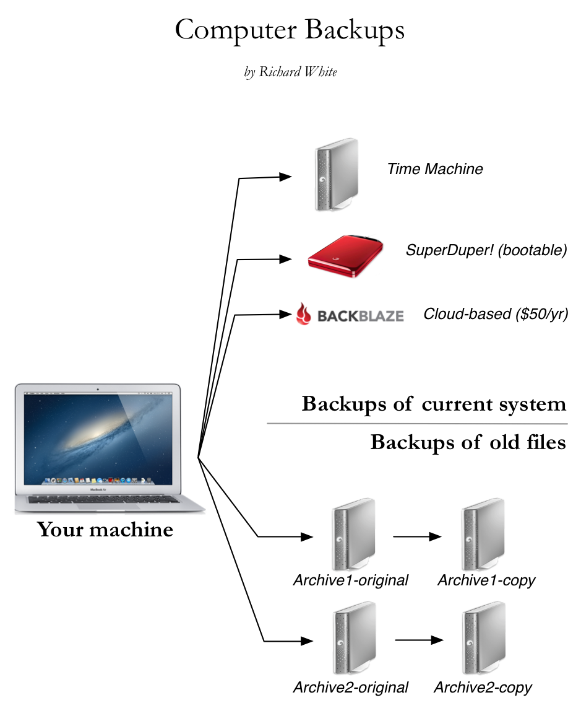

Backing Up Your Data
You have a computer, and you have data on your computer, and you will lose your data at some point. You probably already have, but if you haven't, you will soon. Your computer will get dropped or stolen, or your hard drive will die, or Microsoft Word will crash...
The only question is: how will you recover your lost data when that happens?
There's no one "right" answer for everybody.
One of the reasons it's hard to discuss or recommend a Backup Strategy is that each of us have different ways that we use our computers. For most people I know, including you, I'd recommend having three copies of your data. Here they are:
- A copy on your computer
This is the "working" copy of your data, the copy of your files that you typically use. It might be a song you downloaded, or a picture you took, or an essay you wrote in Word, or a program for wrote for this class. That's one. - A copy on an external hard drive at home
This is a "local backup," a copy of your data that you keep on hand in case you need to recover from a mishap. Current versions of Microsoft Windows and Mac OS X allow you to use the system software to create backups of your computer onto an external drive. All you have to do is get an external hard drive (something like this), plug it in, and let the machine do it's thing. - A copy "in the cloud"
A third copy is a necessity because backup drives fail too. (As one tech person puts it, "I don't want to know what your backup plan is. I want to know what you do when your backup plan fails.") If the first two copies of your data are destroyed, you'll be happy to have a third copy stored off-site, someplace where you can get it if needed. There are lots of creative strategies for trying to manage this cloud copy on your own, but most people I know pay $5/month or so to have professionals keep a copy. Look at Backblaze or Carbonite and sign up for their services. And then we can stop worrying about this stuff.
What about for this class?
Oh. One more thing...
It's super-fast and super-easy to keep a backup copy of your work for this class on a little USB flash drive. Get one of these little guys and just drag your work folder from your laptop onto the drive every day. If something goes bad, you'll be able to quickly recover and get right back to work with minimal disruption.
When using a flash drive like this, don't forget to "safely eject" the drive on the computer before removing the drive—don't just yank the drive out and go. Even if you've done this before and managed to get away with it in the past, the drive can easily become corrupted (typically through being interrupted during a write process) and then your backup strategy will be for nothing. To safely eject in Windows 7, select the "safely eject" option at the lower right of the task bar. To safely eject in OS X, select the drive (usually displayed on the Desktop) and drag it to the Trash.
What if I'm more paranoid about losing data? What do I do then?
I have a moderately paranoid fear of losing data. I have digital versions of my music, of photos of my family, of this website, of your grades... and I can't afford to lose any of it. Here's what my backup strategy looks like:
I also have custom-built rsync scripts that keep additional copies on other servers, but those strategies are a bit beyond the scope of this course, so we'll leave those as an optional exercise for the reader to pursue.